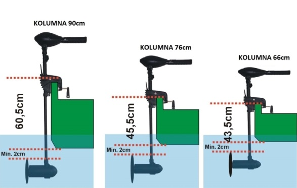
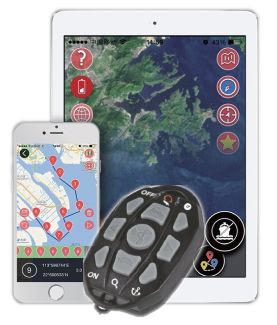
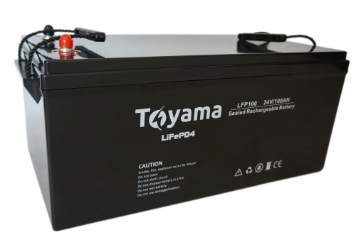
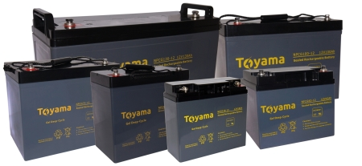

Najczęściej zadawane pytania
- Jaki silnik elektryczny wybrać?
- Jaką markę silnika elektrycznego wybrać?
- Co to jest maximizer?
- Co to jest przełącznik biegów?
- Moc silnika, o co chodzi z lbs, HP, KM?
- Ile silniki elektryczne pobierają prądu?
- Jaką osiągnę prędkość na silniku elektrycznym?
- Sposób używania silnika, trolling czy rekreacyjne pływanie?
- Jaki i czy muszę trzeba bezpiecznik do silnika?
- Jak zamontować silnik na łodzi czy pontonie?
- Jaką długość kolumny silnika wybrać?
- Czy trzeba parować pilot bezprzewodowy z silnikiem Cayman?
- Jaki zasięg ma pilot bezprzewodowy silnika Cayman?
- Ile wynosi czas pracy pilota bezprzewodowego w silnikach Cayman?
- Skąd pobrać aplikację Helmsman do obsługi silników Cayman GPS?
- Jaki typ akumulatora wybrać do silnika?
- Jaką pojemność akumulatora wybrać do silnika?
- Jak długo będę pływał na danym akumulatorze?
- Jaki wpływ na czas pracy akumulatora ma temperatura otoczenia?
- Jak poprawnie podłączyć silnik elektryczny do akumulatora?
- Jak połączyć akumulatory szeregowo w instalacje 24V?
- Jak połączyć akumulatory równolegle czyli zwiększamy pojemność?
- Jakie są wymiary podstawy mocującej do silników Cayman B55/80, Cayman GPS55?
Jaki silnik elektryczny wybrać?
Jest to najczęściej zadawane pytanie podczas rozmów odnośnie silników. Haswing w ofercie posiada ponad 30 modeli silników. Są to modele z rumplem, zdalnie sterowane, do montażu pod sterociąg, 12V, 24V lub 48V. Jak więc wybrać ten odpowiedni?
Pierwszym parametrem, który należy znać to wymiary (długość, szerokość) oraz wagę jednostki. Silniki dobieramy najlepiej z zapasem mocy, aby nie był on narażony na przeciążenie. Najważniejsze znaczenie ma szerokość jednostki, gdyż szerokość generuje największy opór. Producent w specyfikacji podaje do jakiej maksymalnej długości jednostki można zastosować dany silnik.
Silniki zazwyczaj posiadają sterowanie za pomocą rumpla, pilota bezprzewodowego lub manetki. Trzeba zastanowić się na czym nam zależy.
Kolejną kwestią jest wybór silnika z maximizerem czy przełącznikiem biegów. Co to jest maximizer? Odpowiedź na to pytanie znajduje się w dalszej części poradnika.
Ważnym aspektem jest również miejsce gdzie będziemy pływać, jezioro, zalew, morze, rzeka. Jeżeli chodzi o pływanie na rzece z wartkim nurtem, ogólnie nie zalecamy stosowania silników elektrycznych. Jeżeli jednak Klient zdecyduje się na wybór silnika na rzekę, do poniższej tabeli należy dodać 10lbs przy spokojnych rzekach i do 30lbs przy większym nurcie.
Jeżeli chodzi o wybór silnika do pontonu należy zachować zapas co najmniej 10lbs. Przykładowo do łodzi 4m, wybieramy silnik 40lbs, do pontonu 4m wybierzemy silnik 50-55lbs. Ponton stawia większe opory na wodzie niż łódź.
Wybór na wody spokojne i wzburzone:
- Szerokość łodzi x Uciąg
- 130cm - 30lbs
- 135cm - 30lbs
- 140cm - 30lbs
- 145cm - 30lbs
- 150cm - 30lbs
- 155cm - 30lbs
- 160cm - 30lbs
- 170cm+ - Zalecamy silnik 24V
Jaką markę silnika elektrycznego wybrać?
Najlepszym wyborem będzie taki silnik, do którego są dostępne części serwisowe oraz serwis znajduje się na terenie kraju. Należy znaleźć jak najwięcej informacji o danym modelu, od kiedy firma istnieje, jakie modele ma w sprzedaży, jakie są warunki gwarancji itp. Na rynku jest dużo firm, modeli silników ale należy pamiętać, iż kupując silnik z nieznanego źródła w atrakcyjnej cenie może wiązać się to później z serią problemów.
Nie chcę tutaj mówić, że należy wybrać silnik firmy X czy Y bo są bezawaryjne, najlepsze na świecie itd. Należy kierować się zdrowym rozsądkiem, jeżeli nie mamy pewności należy skontaktować się z dystrybutorem, dopytać o szczegóły i wówczas podjąć decyzję.
Rozumiem, że dużo informacji można znaleźć również również na różnych forach czy grupach. Sam czytam i przeglądam te informacje, oprócz oczywiście fachowej wiedzy i porad bardzo dużo jest informacji niezgodnych z prawdą, a wręcz absurdalnych. My jako importer silników Haswing, zawsze chętnie doradzimy w wyborze odpowiedniego modelu.
Co to jest maximizer?
Mówiąc najprościej jak się da, maximizer to urządzenie, dzięki któremu regulujemy prędkość silnika płynnie (podobnie jak manetką w motocyklu). Regulacja z użyciem zwykłego przełącznika biegów ma tę podstawową wadę, że przykładowo na 2-gim biegu otrzymamy prędkość 2km/h, a na 3-cim biegu 3,5km/h, nie mamy możliwości uzyskać pośredniej prędkości co jest bardzo istotne przy trollingowaniu.
Maximizer oprócz płynnej regulacji ma jeszcze jedną bardzo istotną zaletę – oszczędza prąd w akumulatorze (zwiększa zasięg łodzi w stosunku do silnika ze standardową regulacją biegów 5/3), przykładowo: silnik z przełącznikiem 5/3 na biegu 3 uzyska 3,2km/h przy poborze prądu 22A, ten sam silnik z maximizerem przy tej samej prędkości pobierze prąd około 7A. W pływaniu na maksymalnej prędkości pobory są takie same, dane z naszego testu, silnik 55Lbs, łódź 3,2m/1,1m.
Co to jest przełącznik biegów?
Jest to urządzenie w silniku, które ma swój określony zakres pracy. Najczęściej silniki posiadają 5 biegów w przód oraz 3 biegi w tył. Sterując rumplem, jedno „kliknięcie” przełącznika „wrzuca” nam bieg wyżej lub niżej. Kluczową sprawą jest tutaj sposób używania silnika z przełącznikiem biegów.
Nie zaleca się przełączać biegów z 1 od razu na 5, spowoduje to szybkie zużycie się przełącznika biegów. Biegi (prędkości) włączać w kolejności numeracji. Najpierw bieg 1, a po trzech sekundach bieg następny i itd. Między biegami trzeba poczekać, aż silnik „wkręci” się na dane obroty. Biegi w dół można przełączać pomijając biegi pośrednie, nawet bezpośrednio do punktu „0”.
Moc silnika, o co chodzi z lbs, HP, KM?
W różnych opisach można się spotkać z podawaniem mocy silnika KM - Koń Mechaniczny lub HP - Koń Parowy, w większości opisów nie ma to nic wspólnego z mocą silnika, jest to tylko nazwa. LBS oznaczają funty uciągu silnika. Jak to sprawdzić?
1KM = 735W
1HP = 746W
1000W = 1,3596KM lub 1,341HP
W porównaniu silników elektrycznych i spalinowych można spotkać się najczęściej z porównaniem uciągu danego silnika, np. silnik 160lbs będzie porównany do uciągu silnika spalinowego o mocy 6HP. Porównywanie samej mocy silnika spalinowego i elektrycznego mija się z celem. Tak jak wcześniej wspomniałem, silniki elektryczne nastawione są na uciąg.
Ile silniki elektryczne pobierają prądu?
W specyfikacji każdego silnika producent podaje w amperach jaki maksymalny prąd dany silnik pobiera przy jego maksymalnych obrotach (pełnej mocy). Silniki Haswing pobierają od kilku do 125A w zależności od modelu. Wpływ na pobór prądu ma również przełącznik biegów lub maximizer. Wartości te podane są dla maksymalnego dopuszczalnego obciążenia. W praktyce jest to zazwyczaj kilka amperów mniej.
Dużo osób w ogóle nie zwraca uwagi ile prądu pobiera dany silnik. Np. Protruar 1.0 pobierając 45A na maksymalnej mocy, rozpędzi łódź 4m/1.2m do prędkości powiedzmy 6km/h, gdzie Protruar 5.0 pobierając 100A rozpędzi taką samą łódź do prędkości powiedzmy 7-8km/h. (nie wspominając jakie akumulatory i to dwa akumulatory będą potrzebne do zasilenia tego silnika). Nie ma tutaj ogromnej różnicy w prędkości osiąganej na wodzie. Oczywiście każdy może wybrać sobie silnik jaki mu się podoba, ale chcę tylko uświadomić na czym to polega. Natomiast do dużych łodzi, 6,7m, wybór silnika 160lbs będzie jak najbardziej odpowiedni.
Jaką osiągnę prędkość na silniku elektrycznym?
Pierwszą i najważniejszą informacją jaką należy zapamiętać: silniki elektryczne są silnikami uciągowymi, a nie prędkościowymi. Dużo osób wybiera silniki o znacznym zapasie mocy, myśląc, że prędkość będzie o wiele większa. Nie o to tutaj chodzi. Należy tak dobrać silnik, aby rozpędzić łódź do maksymalnej prędkości w jak najkrótszym czasie. Prędkości osiągane w przypadku silników Haswing wynoszą od 4km/h do 15km/h. Wszystko zależy od bardzo wielu czynników, w tym mocy silnika.
Weźmy dla przykładu: łódź 4m/długość i 1.4m/szerokość. Silnik Protruar 5.0 24V 160lbs. Silnik ten osiągnie powiedzmy maksymalnie 8km/h. Taką samą prędkość osiągnie na łodzi 6m przy ten samej szerokości.
Sposób używania silnika, trolling czy rekreacyjne pływanie?
Ważny jest również sposób wykorzystywania silnika, czy będzie on się przemieszczał z punktu A do punktu B, czy będzie używany do rekreacyjnego pływania, czy może do trollingu. Ogólnie do przemieszczania z punktu A do punktu B można śmiało wybrać silnik z przełącznikiem biegów. Do pływania rekreacyjnego oraz trollingu warto zastanowić się nad silnikiem z maximizerem co pozytywnie wpłynie na oszczędność prądu w akumulatorze. Należy pomyśleć ile razy silnik będzie używany w roku, czy będzie to 3 razy czy 30 razy.
Jaki i czy trzeba montować bezpiecznik do silnika?
Zasada jest tutaj prosta. Znając maksymalny pobór silnika dodajemy do tej wartości +10A i możemy taki bezpiecznik zamontować. Do silnika 55lbs (55A max pobór prądu) najczęściej montuje się bezpiecznik 60A. Stanowi on dodatkowe zabezpieczenie, np. na wypadek wplątania się żyłki w śrubę. Na rynku mamy dostępne bezpieczniki topikowe oraz automatyczne. Niektóre modele silników mają wewnętrzne zabezpieczenie, które samoczynnie odcina zasilanie np. kiedy zostanie przekroczony jakiś prąd obciążenia oraz gdy będzie za wysokie lub za niskie napięcie.
Jak zamontować silnik na łodzi czy pontonie?
Do każdego silnika Haswing dołączona jest instrukcja która pokazuje krok po kroku jak używać, montować, dbać o dany model. Na pewno nie należy dokręcać silnika do pawęży „na siłę”, może to spowodować jego uszkodzenie. Istotną kwestią jest tutaj odpowiednie zanurzenie silnika, tak aby śruba nie pracowała częściowo ponad taflą wody. Na rysunku zaznaczone są prawidłowe wartości i odległości podczas montażu.
Jaką długość kolumny silnika wybrać?
W ofercie dostępne są długości kolumny od 54cm do 210cm. W opisie każdego silnika podane są dokładne wymiary i/lub efektywna głębokość zanurzenia. Należy najlepiej zmierzyć odległości od pawęży lub dziobu łodzi i wówczas porównać z wymiarami podanymi w specyfikacji danego silnika. Należy pamiętać, iż większość silników Haswing ma możliwość regulacji wysokości na całej długości kolumny, można więc dopasować idealnie dany model do łodzi czy pontonu.

Czy trzeba parować pilot bezprzewodowy z silnikiem Cayman?
Nie trzeba tego robić. Silnik i pilot są już fabrycznie ze sobą sparowane. Jeżeli zdarzyłoby się jednak, że połączenie zostało zerwane, w instrukcji obsługi jest dokładnie opisane jak wykonać połączenie pilota z silnikiem.
Jaki zasięg ma pilot bezprzewodowy silnika Cayman?
Pilot bezprzewodowy ma do kilkunastu metrów zasięgu na otwartej przestrzeni.
Ile wynosi czas pracy pilota bezprzewodowego w silnikach Cayman?
Czas pracy wynosi od kliku do kilkunastu godzin, w zależności od warunków pogodowych. Ładowarka jest dołączona do zestawu. Pilot posiada wbudowany akumulator. Zalecamy zapatrzeć się w power-bank lub adapter 12V->USB dzięki któremu załadujemy nasz pilot bezpośrednio z akumulatora.
Skąd pobrać aplikację Helmsman do obsługi silników Cayman GPS?
Aplikację można pobrać za darmo na system Android lub iOS (Apple)
System Android (ver. 4.3 lub wyższa) -> Sklep Play -> wpisujemy w wyszukiwarkę "Helmsman"
IPhone iOS (ver. 8 lub wyższa) -> App Store -> wpisujemy w wyszukiwarkę "Helmsman"
Jaki typ akumulatora wybrać do silnika?
Na rynku dostępne są żelowe, AGM, litowe, kwasowe. Należy pamiętać, iż akumulator akumulatorowi nierówny. Zalecamy sprawdzić przed zakupem opinię o danym modelu. Po pierwsze musimy się zastanowić ile, jak, gdzie i kiedy będziemy używać danego akumulatora. Jeżeli użyjemy go 3 razy w roku na „wakacjach”, nie ma sensu kupować najlepszego akumulatora 200Ah, kiedy używamy silnika 40lbs.
Najczęściej wybieranymi akumulatorami do silników elektrycznych są akumulatory żelowe, chodź w o ostatnich 2 latach widać tendencję do zmiany tej technologii na poczet akumulatorów litowych. Układając w hierarchii akumulatory od powiedźmy najmniej „żywotnych” będą to kolejno: kwasowe → AGM → AGM deep cycle → żelowe → żelowe deep cycle → litowe.
Na rynku dostępne są żelowe, AGM, litowe, kwasowe. Należy pamiętać iż akumulator akumulatorowi nie równy. Zalecamy sprawdzić przed zakupem opinię o danym modelu. Po pierwsze musimy się zastanowić ile, jak, gdzie i kiedy będziemy używać danego akumulatora. Jeżeli użyjemy go 3 razy w roku na „wakacjach”, nie ma sensu kupować najlepszego akumulatora 200Ah, kiedy używamy silnika 40lbs.
Najważniejsze informacje są takie, że potoczna nazwa akumulator żelowy to nic innego jak akumulator kwasowo-ołowiowy. Tak, może ktoś pomyśleć, że „zwykła kwasówka” to też akumulator kwasowo-ołowiowy. Jest to jak najbardziej zgodne z prawdą, z tym, że akumulator żelowy ma zupełnie inną wewnętrzną budowę. Elektrolit jest umieszczony w postaci żelu w poszczególnych celach z ołowiu. Koncentruje on większą ilość energii dlatego ten typ akumulatora ma trochę wyższe napięcie niż kwasowy, oraz jest o wiele żywotniejszy.
Kluczowa informacja do przeczytania i zapamiętania jest taka: akumulator żelowy czy AGM należy jak najszybciej naładować do pełna po zakończonym użytkowaniu. Nie ważne czy pływaliśmy 10minut czy 2h, należy to zrobić niezwłocznie po zakończonej pracy. Zakres pracy akumulatora żelowego 12V wynosi od 10.5V do 13V. Nie wolno rozładować akumulatora poniżej tej wartości (10.5V). Najlepiej rozładować go do minimalnej wartości 11-11.5V czyli zostawić ok. 50% pojemności, co znacząco wpłynie na jego żywotność.
Często w rozmowach z Klientami słyszę, że „akumulator wystarcza mi na 3 dni pływania bez ładowania”, w taki sposób użytkowania akumulator długo nie posłuży. Pozostawiony bez ładowania zaczyna się „zasiarczać”. Najgorsze dla tego typu akumulatorów (co zdarza się również dość często) jest pływanie do tzw. „końca”. Jeżeli silnik przestaje płynąć wówczas kończymy wycieczkę po akwenie. Jest to zabójstwo dla akumulatora żelowego. Często akumulator ma 3V, 5V i jest duża szansa, że jest to jego koniec.
Akumulatory litowe występują w kilku odmianach np. Li-ion, LiFePO4, Li-ion NMC. Różnią się zakresem pracy jeżeli chodzi o napięcie, wymiarami, wagą oraz cyklicznością. Z naszego doświadczenia wynika, iż akumulatory litowe są przynajmniej 2x żywotniejsze niż żelowe oraz oddają około 30% więcej energii przy tej samej pojemności oraz są nawet do 5x lżejsze niż żelowe. Krzywa rozładowania jest zupełnie inna. Nie trzeba ich ładować niezwłocznie po użyciu (jeżeli oczywiście nie zużyliśmy całej dostępnej pojemności).
Zalecany typ akumulatora jest zawsze podany w specyfikacji technicznej silników Haswing.
Jaką pojemność akumulatora wybrać do silnika?
Na rynku mamy obecnie bardzo dużo akumulatorów. Dostępne są żelowe, AGM, litowe, kwasowe. Jaki będzie najlepszy do naszego silnika? Pierwszy parametr który musimy znać to maksymalny pobór prądu silnika podany w amperach (A).
Dobierzmy akumulator do silnika Osapian 55, wiemy, że silnik pobiera prądu 55A na pełnej mocy. Aby czas pływania na maksymalnych obrotach nie wynosił tylko 10 minut, musimy zastosować akumulator przynajmniej 100Ah. Najłatwiej można to policzyć:
Silnik pobiera 50A – wybieramy akumulator 100Ah.
Silnik pobiera 60A – wybieramy akumulator 120Ah.
Mnożymy maksymalny prąd x2. Wówczas możemy mniej więcej dobrać odpowiednią pojemność.
Im większą pojemność akumulatora wybierzemy, tym czas pływania będzie dłuższy. Należy pamiętać, iż nie zalecamy wyboru akumulatorów o bardzo małej pojemności np. do Osapiana 55 akumulatora 50Ah. Po pierwsze, szybko się zużyje, po drugie będzie bardzo obciążony i jego żywotność będzie szybko spadać.
Jak długo będę pływał na danym akumulatorze?
Tak na prawdę, rozbieżność jest tutaj bardzo duża. Wszystko zależy od pojemności, typu akumulatora, temperatury, mocy silnika itd. Przykładowo: silnik Protruar 1.0 która pobiera przy danej łodzi maksymalnie 50A na akumulatorze 100Ah żelowym wystarczy na około 1,5h pływania na maksymalnych obrotach. Czas ten będzie się oczywiście wydłużał, jeżeli zmniejszamy moc silnika. Na prędkościach 2/3km/h można uzyskać czas na poziomie kilku godzin.
Niektóre modele silników Haswing mają możliwość zwiększania lub zmiejszania mocy silnika tak, aby oszczędzać dodatkowo prąd w akumulatorze, np. Ultima czy Protruar 55.
Jaki wpływ na czas pracy akumulatora ma temperatura otoczenia?
Bardzo ważną kwestią jest tutaj aktualna temperatura, szczególnie w przypadku akumulatorów AMG i żelowych. Znamionowa temperatura pracy akumulatorów żelowych wynosi 20°C. Gdy na zewnątrz jest np. -20°C lub +40°C ciężko jest nam pracować kilka godzin, tak samo jest w przypadku akumulatorów.
Podczas pracy w niskich temperaturach należy uwzględnić spadek pojemności akumulatora i dobierać ją z odpowiednim zapasem. W temperaturze 0°C pozostaje do dyspozycji ok. 85%, w minus 10°C około 75% i minus 20°C odpowiednio 65% pojemności znamionowej. Praca akumulatorów bezobsługowych w podwyższonych temperaturach powoduje skrócenie ich żywotności. Żywotność zmniejsza się o połowę na każdy wzrost temperatury o 10 °C powyżej znamionowej temperatury pracy. Oznacza to, że akumulator eksploatowany w 30°C zachowa 50%, a w 40°C tylko 25% projektowanej żywotności.
Jak poprawnie podłączyć silnik elektryczny do akumulatora?
Na słupek akumulatora nakładamy oczko przewodu silnika, następnie podkładka płaska, na podkładkę płaską kładziemy podkładkę sprężynującą i całość dokręcamy śrubką ale nie za mocno, żeby nie zerwać gwintu, moc dokręcenia ma być taka, by oczko przewodu trzymało się bez ruchu. Można zastosować tzw. motylki do dokręcenia oczka silnika, jest to wygodniejsze rozwiązanie.
W niektórych silnikach innych marek, zdarza się, że kable zasilające są zakończone tzw. "żabkami","krokodylkami", jest to wygodniejsze i szybsze podłączenie do akumulatora, ale nie polecam tego typu rozwiązań. Szczególnie w silnikach, które pobierają 40A lub więcej. Styk z klemą jest tylko punktowy, słupki akumulatora oraz kable zasilające szybko się nagrzewają lub przegrzewają co ma negatywny wpływ na akumulator oraz straty w mocy silnika. Zalecamy podłączanie silnika bezpośrednio do akumulatora poprzez dokręcenie śrubami.
Jak połączyć akumulatory szeregowo w instalacje 24V?
Zasada połączenia jest bardzo prosta. Łączymy plus z jednego akumulatora 12V z minusem drugiego akumulatora 12V. Wówczas zwiększa się napięcie 2x12V = 24V. Silnik podłączamy do pozostałych biegunów akumulatora zgodnie z oznaczeniem plus lub minus. Należy pamiętać aby połączenie wykonać możliwie jak najkrótszym konektorem o przekroju odpowiadającym co najmniej przekrojowi przewodów silnika, a najlepiej "grubszym".
Do każdego silnika Haswing 24V dołączony jest konektor do połączenia akumulatorów.
Do silnika elektrycznego można również zastosować akumulatory litowe 24V, wówczas mamy gotowy do podłączenia akumulator w jednej obudowie. Akumulator litowo-jonowy 7S lub LiFePO4 8S.
Jak połączyć akumulatory równolegle czyli zwiększamy pojemność?
Łączymy plus z pierwszego akumulatora 12V z plusem drugiego akumulatora 12V. Następnie łączymy minus z pierwszego akumulatora 12V z minusem drugiego akumulatora 12V. Wówczas zwiększa się pojemność akumulatorów 2x100Ah/12V = 200Ah 12V. Silnik podłączamy do plusa pierwszego akumulatora oraz do minusa drugiego akumulatora. Należy pamiętać aby połączenie akumulatorów wykonać możliwie jak najkrótszym konektorem o przekroju odpowiadającym co najmniej przekrojowi przewodów silnika, a najlepiej "grubszym".
Takie połączenie zapewnia w miarę równomierne rozładowywanie się akumulatorów oraz wydłuży ich żywotność.
Jakie są wymiary podstawy mocującej do silników Cayman B55/80, Cayman GPS55?

Podstawa mocująca o kodzie towaru 59927 pasuje do silników Cayman B55, Cayman B80, Cayman GPS55. Produkt do zakupienia osobno, nie jest w zestawie z silnikiem.
Jeżeli mają Państwo jakieś dodatkowe pytania, zapraszamy do kontaktu.
MARKOR SP.J
Wyłączny importer silników Haswing w Polsce
ul. Braci Kobylańskich 5
26-340 Drzewica
+48 535 334 567 | +48 602 192 702
biuro@haswing.pl